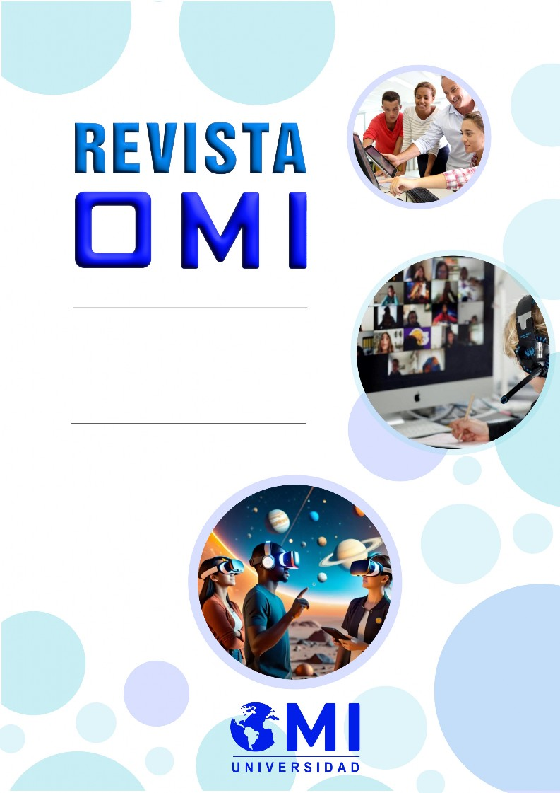

ALCANCE E INTERYENCIÓN
INTERNACIONAL
INYESTIGACIÓN CIENTÍFICA Y ACADÉMICA

ACERCA DE LA REYltTA
Enfoqte y alcance
Revista OMI es una revista de investigación científica, adscrita al Organismo Mundial de Investigación, Sociedad Civil, con la denominación Universidad OMI Centro de Investigación otorgada por parte de la Secretaría de Educación Pública (SEP) de México, Su objetivo es divulgar la producción científica y académica generada en instituciones educativas del territorio del país y del mundo en el ámbito académico en general,
Se publica en idioma español, aunque los metadatos de los artículos y las directrices para autores aparecen también en inglés, Acepta trabajos originales en las siguientes modalidades¦ artículos de investigación, artículos de revisión, ensayos científicos y reseñas que sean resultado de investigaciones científicas, revisiones documentales y procesos de formación académica y de la reflexión crítica y de experiencias sobre la práctica educativa, así como de la actividad científico-metodológica,
Su periodicidad semestral¦ primer número julio-diciembre 2024, segundo número enero-junio 2025, Se publica el número en construcción al que se incorporan los artículos en el momento
en que sean aprobados por el arbitraje, con cierre en la primera quincena de los meses julio y enero, Ocasionalmente, pueden publicarse números especiales y monográficos,
La Revista OMI se dirige a investigadores, docentes, estudiantes universitarios y otros interesados en las diferentes disciplinas del ámbito académico o científico, Las colaboraciones abarcan los siguientes campos temáticos¦ Educación de pregrado y postgrado; Educación cívica y patriótica; Filosofía de la educación; Psicología de la educación; Pedagogía; Didáctica; Didácticas particulares de las asignaturas y áreas del conocimiento; Investigación educativa; Dirección científica educacional; Trabajo extensionista; Tecnología y ciencias de la información y las comunicaciones; Educación para la salud; Educación ambiental; Educación jurídica, Educación económica; Formación de profesionales; Formación de docentes y Orientación profesional pedagógica,

Proceso @e eraltación por pares
Todos los artículos serán sometidos al proceso de análisis y evaluación mediante el sistema de revisión por pares (en su mayoría externos), modalidad a doble ciegas, garantizando el anonimato de autores y árbitros, El proceso de evaluación de los artículos comenzará a partir de la fecha en que el Consejo Editorial constate el cumplimiento de las normas editoriales, La revisión de los artículos no se cobra ni a los autores ni a las instituciones, La revista no se responsabiliza con los criterios contenidos en el artículo,
Pasos @el proceso @e rerisión
1, Se verifica que el escrito cumple con los requisitos solicitados en las directrices para los autores, El artículo será devuelto a sus autores, si se constatara la existencia de problemas de redacción, de ajuste al estilo científico o a las normas de publicación de la revista; podrá volver a presentarse al proceso editorial cuando sean resueltos los señalamientos,
2, Se constata que el artículo no incurre en plagio ni autoplagio,
3, Se envía el artículo a dos expertos del Comité Científico, sin los datos personales de los autores,
4, Se dictamina por los expertos
--preferiblemente en línea, mediante el formulario establecido--, en un plazo de cuatro semanas a partir de la fecha en que reciban el artículo, uno de los siguientes fallos¦
Aceptar el envío,
Publicable con modificaciones,
Reenviar para revisión,
No publicable,


Formtlarios @e rerisión
Para artículos de investigación,
Para artículos de sistematización,
Para ensayos y monografías,
Para reseñas científicas,
Si uno de los expertos no estuviera de acuerdo con la publicación del artículo, este será sometido a revisión por parte de un tercer evaluador; el criterio predominante será definitorio, El artículo corregido se verificará nuevamente por los expertos, En caso necesario se enviará por segunda y última vez a los autores para las correcciones pertinentes, El período de publicación estimado es de ciento ochenta días,
Política de acceso abierto,
La Revista OMI asume la política de acceso abierto y gratuito a la información y al uso sin restricciones, de los artículos que publica, por parte de todas las personas, Es posible acceder a sus contenidos de manera libre, sin costo alguno para los lectores; estos pueden descargar, almacenar, copiar, resumir, adaptar y distribuir el trabajo publicado de forma gratuita, siempre que sea sin fines comerciales y se referencien la fuente y autoría del trabajo, Los autores no asumen ningún costo por el procesamiento editorial de sus artículos ni autores ni revisores recibirán remuneración alguna por la revisión o publicación de los trabajos,

Política antiplagio
La Revista OMI se opone a cualquier manifestación contraria al uso ético de la información y a ese fin, aplica las siguientes herramientas antiplagio¦
Plagiarisma,net¦ https¦//plagiarisma,net/es/
Plagiarism Checker¦ https¦//www,paperrater,com/plagiaris m_checker
PlagScan¦ https¦//www,plagscan,com/es/
Plagiarism Checker¦ https¦//www,plagiarismchecker,com/
Al detectarse plagio, ciberplagio o publicación redundante, se procede de la siguiente forma¦
Antes de la publicación del artículo
El Comité Editorial considerará el criterio de los autores, evaluará la situación objetivamente, determinará con precisión si puede ser solucionado por el autor(es) a instancias del editor, o si es necesario rechazar el artículo, según la magnitud del hecho,
Después de la publicación del artículo El Comité Editorial tendrá en cuenta el criterio de los autores y evaluará la situación con objetividad, Cuando se constate el plagio, se retirará el artículo de la publicación, se publica una nota de retractación y se informa a la institución y a las bases de datos en que se indiza la Revista OMI,

Normas éticas
La Revista OMI asume el compromiso de favorecer el respeto a las buenas prácticas y normas éticas en la gestión editorial de acuerdo con lo siguiente¦
1, La originalidad de los trabajos enviados es un requisito esencial para su evaluación y publicación,
2, Todas las personas incluidas como autores deben haber contribuido de manera significativa al análisis y procesamiento de la información y la generación del conocimiento científico del artículo,
3, Se considera una desviación ética la inclusión injustificada de autores, que no hayan aportado directamente al contenido científico del artículo, En caso necesario se recomienda hacer uso de notas de agradecimiento,
4, Los autores son responsables de la confiabilidad de los datos, informaciones, conocimientos, análisis y enfoques contenidos en el artículo,
5, Los autores y revisores deben informar al editor sobre la existencia real o potencial de conflictos de interés respecto al contenido del artículo,
6, Los revisores son responsables del cumplimiento de las normas establecidas por la revista para la evaluación y publicación,
7, El Comité Editorial se compromete a atender con agilidad y transparencia los conflictos de interés que se presenten, analizar y dar respuesta a las quejas y apelaciones con honestidad, objetividad y apego a las normas editoriales y éticas asumidas por la revista,
8, El Comité Editorial aplicará las prevenciones necesarias para evitar el surgimiento de posibles conflictos de interés,
9, Los editores y evaluadores mantendrán la discreción y confidencialidad respecto a criterios derivados del análisis de la calidad de los artículos,
10, Los evaluadores se comprometen con el rigor científico en el proceso de revisión y a dictaminar en el plazo establecido,
11, El Comité Editorial, en caso de detectarse plagio, o publicación redundante, aplicará el procedimiento establecido en la política antiplagio¦ rechazar el envío (antes de publicarse) o retractación (si ya el artículo había sido publicado),
12, El Comité Editorial es responsable del rigor en el proceso editorial, el enriquecimiento de las normas, requisitos y buenas prácticas que contribuyan a la calidad de la revista,